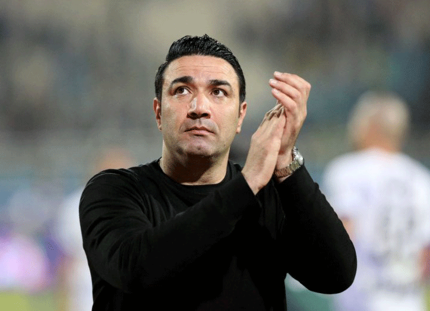
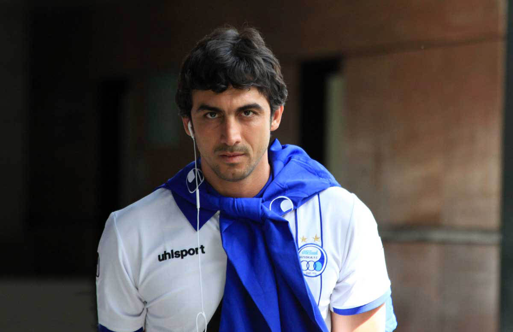
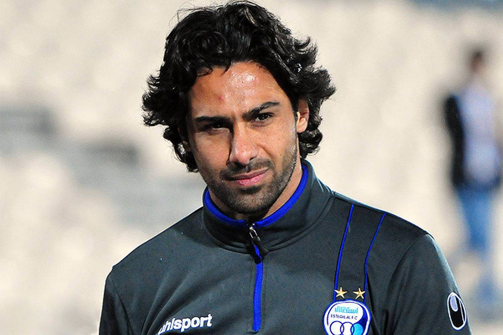

تمامی حقوق این وبسایت متعلق به وایب وب است

جواد نکونام (زادۀ ۱۶ شهریور ۱۳۵۹) بازیکن سابق و سرمربی کنونی فوتبال اهل ایران است. وی هم اکنون سرمربیگری باشگاه فوتبال استقلال تهران را بر عهده دارد. نکونام با حضور در ۱۴۹ بازی ملی، رکورددار بیشترین بازی ملی و بیشترین کاپیتانی در تیم ملی فوتبال ایران است.[۱] نکونام سابقه بازی در تیمهای پاس تهران، اوساسونا اسپانیا، استقلال ایران، الوحده امارات، الشارجه امارات، الکویت کویت، سایپا تهران و العربی قطر را دارد. جواد نکونام در گلپایگان بدنیا آمد ، او از ۷ سالگی مدتی در فردیس کرج و حالا در سعادت آباد تهران زندگی می کند ، پدرش در نیروی هوایی کار می کرد و مادرش خانه دار بود. پدرش در نیروی هوایی کار می کرد و مادرش خانه دار بود.

سید مهدی رحمتی اسکویی (زاده ۱۴ بهمن ۱۳۶۱ در تهران) دروازهبان بازنشسته و سرمربی فوتبال اهل ایران است. او همچنین سابقه سنگربانی در تیمهای استقلال تهران، فجر سپاسی شیراز، سپاهان اصفهان، مس کرمان، پیکان و پدیده مشهد را در کارنامه دارد.. رحمتی در یک خانواده مذهبی چهار نفره، از والدینی آذربایجانی در تهران به دنیا آمد،[۴] وی متأهل و دارای دو فرزند به نامهای علی و عطا است.[۵] همچنین وی در اواخر سال ۱۳۸۹ در مصاحبهای مدعی شد در اوایل دوران جوانی برای گذران زندگی با ماشین شخصی مسافرکشی میکردهاست سال ۱۳۷۴ اولین قراردادش را با تیم نوجوانان پاس امضاء کرد و تا سال ۱۳۷۶ درتمامی ردههای سنی این باشگاه بازی کرد.

فرهاد مجیدی قادیکلایی (زادهٔ ۱۳ خرداد ۱۳۵۵) بازیکن سابق فوتبال و سرمربی کنونی اهل ایران است. مجیدی در فوتبال باشگاهی ایران؛ سابقه بازی در تیمهای صنایع پارچین، کشاورز، بهمن کرج و استقلال را دارد و «نیم فصل» نیز برای راپید وین اتریش بازی کردهاست. مجیدی در «۷ سال حضور در لیگ امارات» نیز برای تیمهای الوصل، العین، الاهلی و النصر به میدان رفت و یک سال نیز در تیم الغرافه قطر بازی کرد. او در مسابقات لیگ قهرمانان آسیا؛ در فصل ۰۳–۲۰۰۲ موفق شد به همراه العین امارات، به قهرمانی این رقابتها دست پیدا کند. مجیدی در رده ملی نیز ۴۵ بار برای تیم ملی فوتبال ایران به میدان رفت و ۱۰ گل به ثمر رساند.
باشگاه فوتبال استقلال که به اختصار استقلال، استقلال تهران و استقلال ایران نیز نامیده میشود، یک باشگاه فوتبال حرفهای[۱۰][۱۱] در ایران است که در چهارم مهر ۱۳۲۴ در شهر تهران بنیانگذاری شد. این باشگاه تا پیش از انقلاب ۱۳۵۷ تاج نام داشت.[۱۲] استقلال با کسب ۳۸ عنوان قهرمانی رسمی در جامهای قارهای، کشوری و استانی پرافتخارترین باشگاههای تاریخ فوتبال ایران محسوب میشود.[۱۳] استقلال به عنوان قدیمیترین و کهنترین باشگاه فوتبال ایران شناخته میشود. آنها بازیهای خانگی خود را در ورزشگاه آزادی در غرب تهران انجام میدهد. این باشگاه در حال حاضر در لیگ برتر ایران و جام حذفی ایران شرکت میکند و کهنترین تیم هر دوی این جامها است.
تمامی حقوق این وبسایت متعلق به وایب وب است